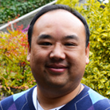

Youth: Rev. Tung Do - Seattle Chinese Alliance Churchg
Topic: Follow Me
Bio:
Tung began attending SCAC late in his high school years. He embraced Christ in 1991 and was baptized in 1996. He has always had a passion to see young people embrace and follow hard after Jesus. Tung began serving the youth as a counselor in the high school fellowship, New Life, before attending seminary at Multnomah University. In 2005, he returned as the youth pastor for the English congregation. In his spare time, he loves hanging out with his beautiful wife, Julie, watching good movies, reading books, and playing tennis. Tung is very excited and honored to seek God together with you this weekend